Hollow, solid & paving brick production line
Presses and cures concrete or cement bricks, hollow blocks and paving stones.
Equipment
Whatever the machine, if it is made in China, we can find, vet and commission it — examples below, not a fixed inventory.
We source against your brief and specification, worldwide. These are common types of production line, not listings of specific verified units — tell us the machine, your site and the destination and we will quote the specification, capacity and lead time.
No matches. Tell us what you need instead — we source things that aren’t on this page too.
Brick, board, roofing and profile lines for builders and building-materials manufacturers.
Presses and cures concrete or cement bricks, hollow blocks and paving stones.
Forms interlocking earth or cement bricks that stack without mortar.
Turns clay or cement mix into bricks, from mixing through forming and drying.
Forms and finishes cement-based wall and floor panels.
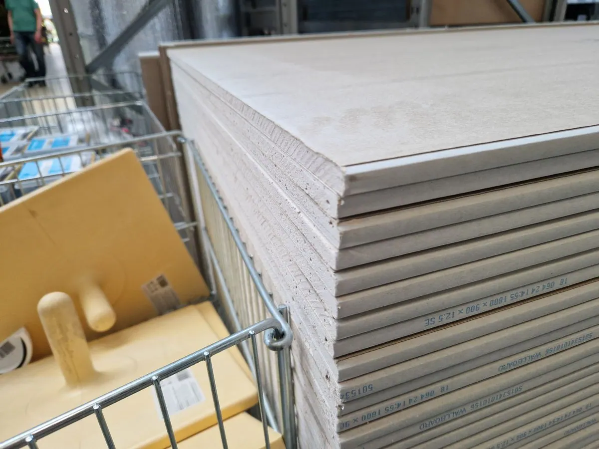
Makes plasterboard: mixing, forming between paper liners, drying and cutting.
Casts and dries gypsum ceiling tiles in standard sizes.
Produces gypsum cornices and ceiling mouldings.
Casts decorative gypsum elements such as rosettes and wall relief.
Rolls galvanised steel coil into pressed roof tiles.
Roll-forms coil into corrugated and trapezoidal roofing sheets.
Coats steel roofing tiles with stone chips for a tile-like finish.
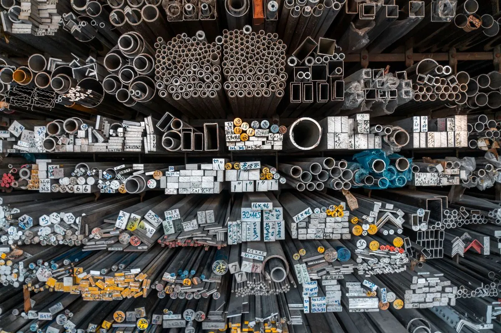
Extrudes aluminium billet into window, door and structural profiles.
Rolls billet into reinforcing bar for construction.
Hot or cold rolls steel into bar, strip and simple sections.
Cuts reinforcing bar on site without a full workshop.
Forms and welds square and rectangular steel tubing.
Presses wood-fibre panels into moulded door skins.
Makes medium-density fibreboard from wood fibre and resin.
Peels, glues and presses veneer into plywood sheets.
Extrudes PVC wall and ceiling panels.
Extrudes decking, cladding and profiles from wood fibre and plastic.
Cuts, edges and processes flat glass for windows and facades.
Cuts and polishes natural or artificial stone into slabs and tiles.
General-purpose industrial machines, power and workshop equipment.
Sound-attenuated diesel generator set for backup or primary power.
Rig for drilling water boreholes and shallow wells.
Filters liquids or oils to remove solids in process lines and workshops.
Separates and extracts liquids and essences, from spirits to plant oils.
Fills bottles and containers with liquids, from water to oils and sauces.
Crimps fittings onto hydraulic hose and cable assemblies.
Bends pipe and tube to a set angle for fabrication.
Strips hose cover ahead of fitting a coupling.
Pressure-tests hose assemblies before they ship.
Marks logos and serial numbers onto metal, plastic and packaging.
Cuts duplicate keys for retail and kiosk use.
Assembles, laminates and tests solar modules.
Fasteners, wire, cable and small-metalware lines for hardware makers.
Draws wire into nails at high speed, with heading and pointing.
Makes roofing nails and self-tapping screws from wire.
Forms, threads and finishes screws, bolts and nuts.
Stamps, forms and assembles door and cabinet hinges.
Machines and assembles door locks and lock sets.
Draws steel wire for kitchenware, mesh and general use.
Produces chain-link and welded fence wire.
Draws, insulates and sheaths electrical cable.
Cuts, bends and welds steel office and school furniture.
Tooling and fittings for cutting, threading and joining steel pipe.
Stamps, polishes and finishes spoons, forks and knives.
Assembles torches from housings, LEDs and switches.
Assembles small electronics such as calculators, LED lamps, radios and toys.
Farm machinery and primary processing for grain, oil, nuts, sugar and tea.
Tractors and implements for tilling, planting and harvesting.
Harvests and threshes wheat and similar cereal crops.
Plants groundnuts at an even depth and spacing.
Back-mounted petrol weeder for small farms.
Battery sprayer for crop protection.
Petrol or electric mower for lawns and estates.

Mixes and presses feed ingredients into pellets for poultry, fish and livestock.
Grinds, mixes and bags compound feed.
Extrudes and dries kibble for dogs, cats and fish.
Feeders, aerators and handling gear for fish and shrimp farms.
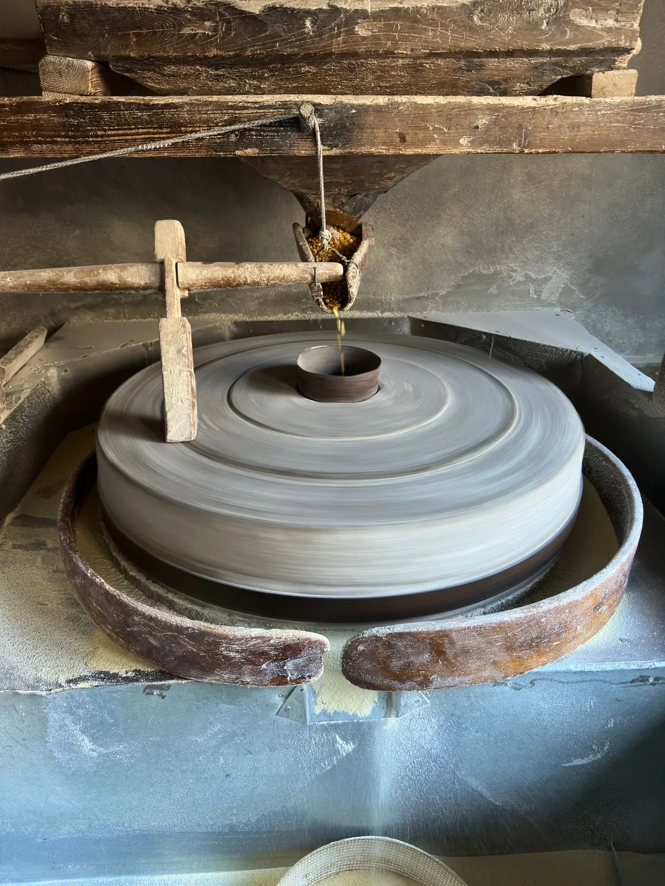
Cleans, degerms and mills maize into flour and grits.
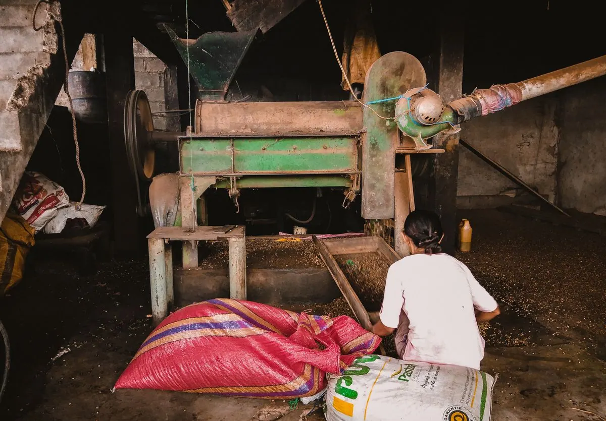
Hulls, whitens and grades paddy into milled rice.

Presses, filters and refines vegetable oil.
Presses sunflower seed and refines the oil.
Shells, peels and grades cashew nuts.
Cleans, shells, roasts and packs mixed nuts.
Washes, slices and dries ginger.
Grinds chilli and pepper to powder.
Dries coconut husk fibre for bedding, rope and briquettes.
Decorticates and cleans sisal leaf into fibre.
Composts cassava waste into granulated organic fertiliser.
Crushes cane and refines it into sugar.
Presses and dries granulated sugar into cubes.
Roasts sunflower, pumpkin and other seeds evenly.
Roasts groundnuts for snacks and butter.
Washes, dries, iodises and packs table salt.
Withers, rolls, dries and packs tea.
Bakery, snack, noodle and packaged-food lines for local food brands.
Mixes, forms, bakes and cools biscuits and crackers.
Mixers, ovens and proofers for a commercial bakery.
Makes, steams, fries and packs instant noodles.
Produces fresh or dried noodles.
Extrudes and dries pasta in common shapes.
Washes, slices, fries and seasons potato chips.
Peels, cuts, blanches and freezes potato fries.
Slices, fries and seasons banana and plantain chips.

Washes, cuts and dries fruit for packing.
Roasts, grinds and fills peanut butter.
Pops, coats and packs popcorn.
Bakes and rolls wafer-style egg rolls.
Cooks, deposits and wraps hard candy and lollipops.
Freezes and packs ice lollies and popsicles.
Fills, seams and sterilises canned food.
Extracts, concentrates and fills tomato paste.

Processes milk into cheese, from curding to pressing.
Fills and seals tea into tea bags.
Bottled water, soft drink, juice and alcohol lines from small plants to full factories.
Treats, bottles and caps drinking water, from raw water to packed case.
Compact water bottling line for entry-level plants.
Mixes, carbonates and fills soft drinks.
Extracts, pasteurises and fills fruit juice.
Brews, ferments and fills beer.
Distils and bottles spirits.
Presses, filters and bottles sugarcane juice.
Freezes block ice for fish, drinks and cold chain.
Packaging, labelling and print-finishing lines for branded goods.
Stamps aluminium foil into takeaway and baking containers.
Rolls and forms aluminium foil for household and catering use.

Cuts, prints and folds corrugated boxes.
Forms and glues paper shopping and food bags.
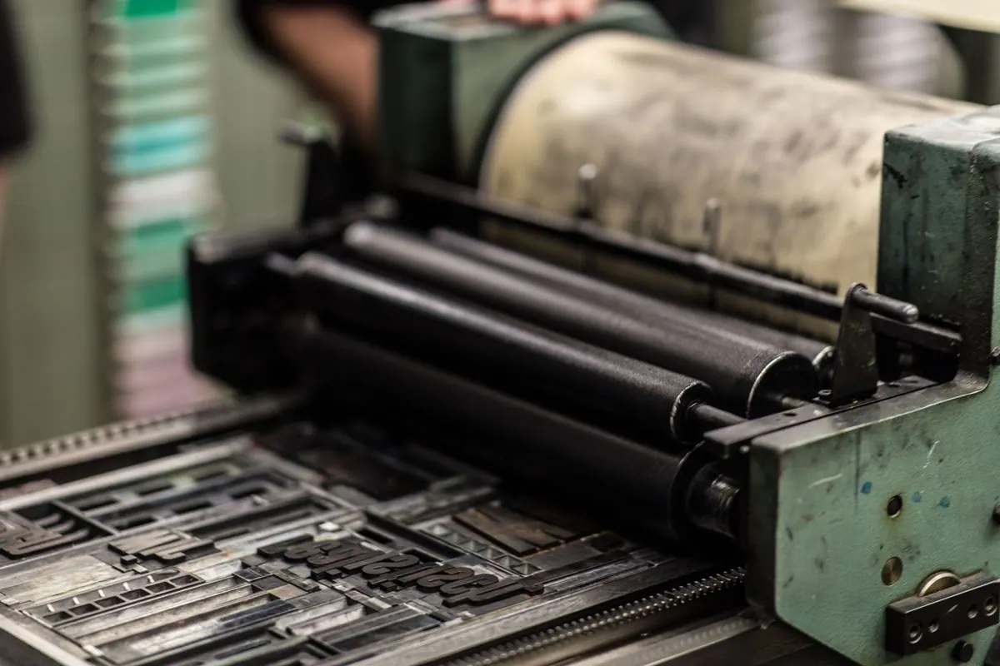
Prints film, paper and bags using flexographic plates.
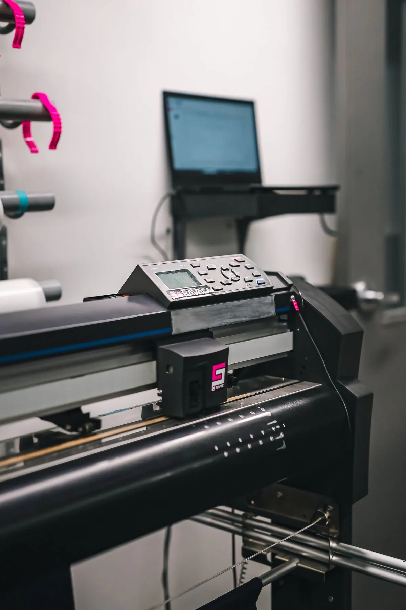
Prints and cuts labels for bottles and cans.
Produces shrink and PVC labels.
Prints, folds and binds books and magazines.
Makes school exercise books, from paper to finished stack.
Prints ID, loyalty and membership cards.
Prints and finishes greeting cards.
Cuts, folds and glues envelopes.
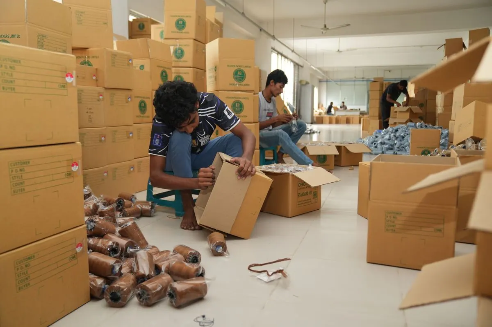
Weighs, fills and seals powders such as flour, milk and spice.
Melts and moulds glass into bottles and jars.

Weaves and converts polypropylene into woven sacks.
Forms and sews non-woven shopping bags.
Tissue, paper-product and stationery lines.
Makes jumbo parent rolls of tissue from pulp or waste paper.
Rewinds, embosses and cuts jumbo rolls into toilet rolls.
Folds, cuts and packs facial tissue.
Pulps waste paper and forms recycled paper.
Moulds waste-paper pulp into trays and protective packaging.
Moulds and dries egg trays from paper pulp.
Forms and seals paper cups for hot and cold drinks.
Forms baking cups for cakes and cupcakes.
Forms paper bowls and food containers.
Forms disposable takeaway boxes.
Cuts, grooves, glues and paints wood pencils.
Rolls waste newspaper into pencils.
Assembles ballpoint pens and refills.
Moulds and dries school chalk.
Cuts and polishes bamboo or wood toothpicks.
Moulding, extrusion and blowing lines for plastic goods and pipe.
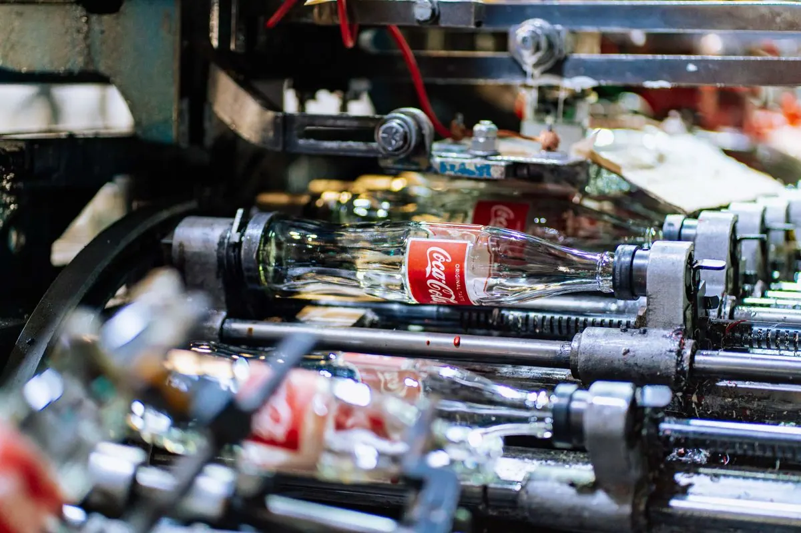
Blow-moulds PET preforms into drinks and water bottles.
Blow-moulds PE containers for oil, detergent and chemicals.
Produces PE drums, jerrycans and containers.
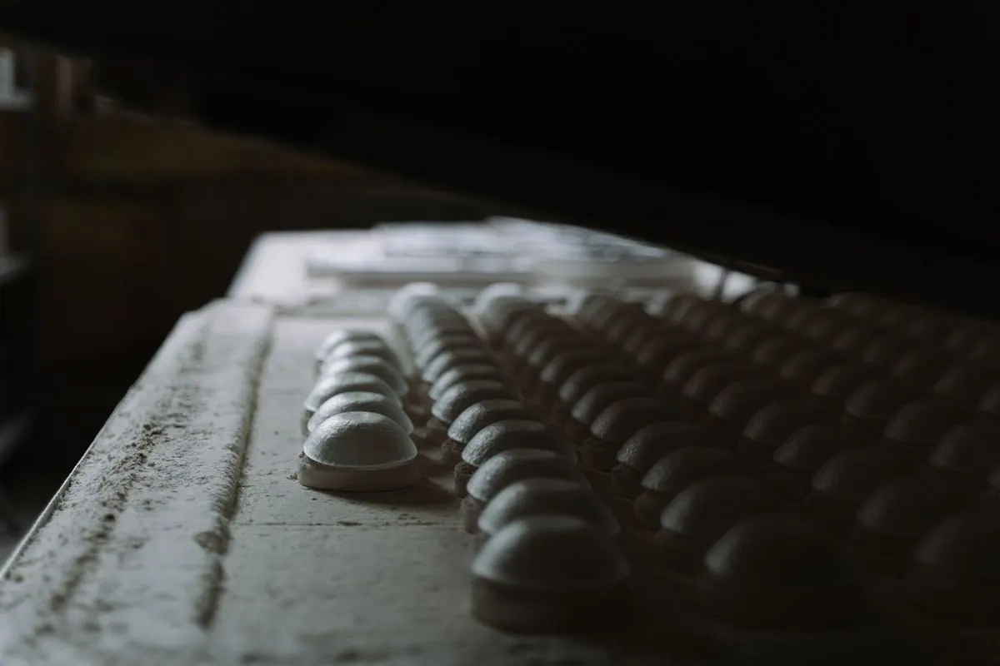
Injection-moulds buckets, lids and handles.
Thermoforms disposable plastic cups.
Forms lids for cups and containers.
Foams and shapes polystyrene food boxes.
Forms clear PVC bottles and packs.
Injection-moulds PVC fittings and parts.

Injection-moulds plastic parts from household goods to crates.
Extrudes HDPE water and irrigation pipe.
Extrudes PVC pressure and drainage pipe.
Extrudes monofilament yarn and twists it into rope and netting.
Garment, knitting, towel and footwear production equipment.

Cutting, sewing and finishing machines for a garment workshop.

Looms and preparation machines that weave fabric.

Knits socks on automatic circular machines.
Weaves and finishes bath and hand towels.
Makes single-use cotton towels for salons and hotels.
Braids and tips shoelaces.
Cuts, stitches and assembles shoes.
Moulds EVA foam sandals and shoes.
Moulds rubber and PU shoe soles.
Makes adhesive tape used in shoe-sole assembly.
Cuts, welds and sews tents and tarpaulins.
Tans, dyes and finishes hides into leather.
Soap, detergent, hygiene-product and medical-disposable lines.
Forms absorbent core, cuts and packs baby diapers and pads.
Forms and packs women's sanitary napkins.

Welds nose wire and ear loops onto layered non-woven masks.
Makes facial and medical masks from PP non-woven.
Dips, cures and strips disposable gloves.
Forms and fills non-PVC bags for intravenous solutions.
Mixes, fills and seals toothpaste tubes.
Moulds handles and tufts bristles.
Mixes, extrudes, stamps and wraps bar soap.
Blends and fills liquid soap and detergent.
Mixes, dries and packs washing powder.
Small-business production lines for everyday household goods.
Melts, pours and cools candles at production scale.
Entry-level candle moulding for small workshops.
Forms and cuts birthday candles.
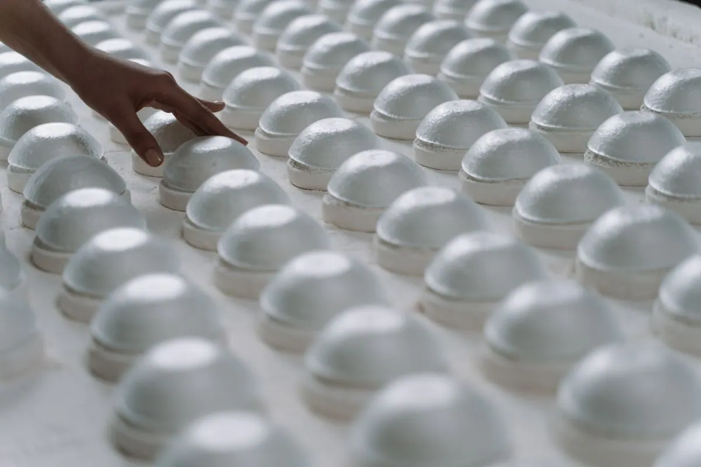
Presses, glazes and fires tableware.
Makes rubber and polymer stamps for offices and kiosks.
Plastic and tyre recycling and fuel-briquette equipment.
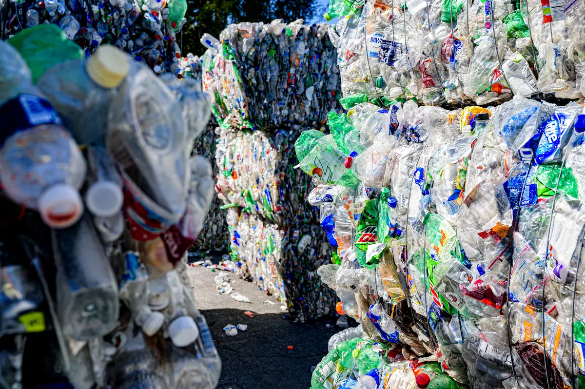
Washes, shreds and pelletises waste plastic.
Shreds tyres into rubber crumb and recovers steel.
Heats waste tyre and plastic without oxygen to produce fuel oil and carbon.
Presses sawdust into fuel briquettes.
Dries coconut fibre ahead of briquetting.
A free 30-minute call. If it is not a fit, we say so.